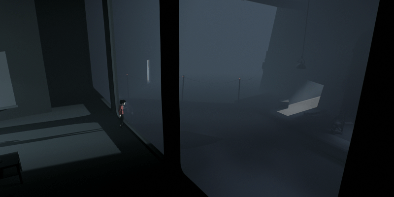
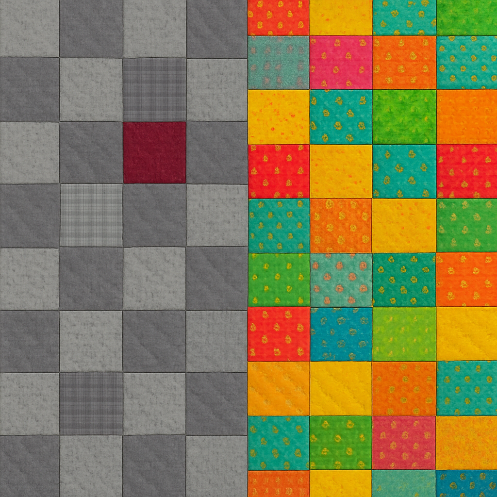
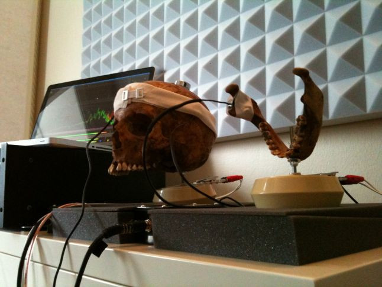
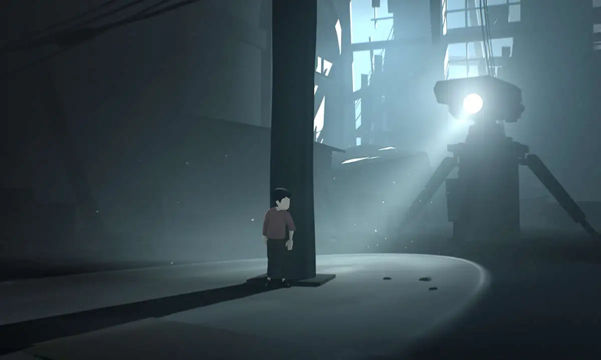
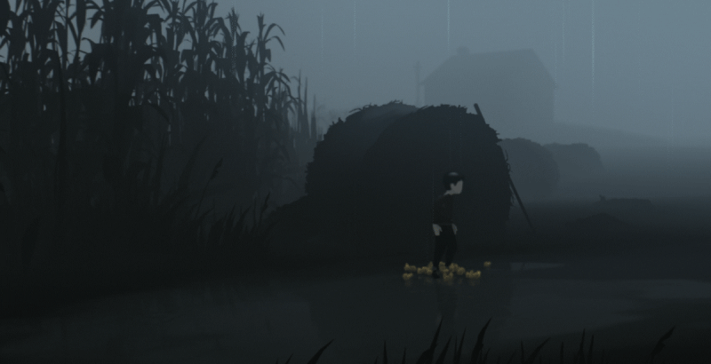

Going Outside the Norm by Scoring INSIDE a Real Human Skull 💀
How Playdead broke all the bones, I mean rules.

My first time hearing about INSIDE was Monday morning at around 10 AM on June 9th, 2014, an hour through Microsoft’s E3 conference. I still remember hearing those footsteps and seeing those eerie visuals. I was so excited to dive in that game when it released. Two years later, I put my phone away and loaded the game. I made sure no distractions came about with my first playthrough and I beat the game in two play sessions without stopping. I was mesmerized. The nostalgia from hearing that spine-tingling behemoth of a sound “shockwave pulse” still reverberates in my skull to this day.
Beauty in the Dark
Before diving into the score, I want to sum up INSIDE by Playdead. Imagine you have two quilts, both have contrasting tones, one more drab than the other. You appreciate both quilts but on that one rainy day, the darker quilt stands out more to you. That’s how INSIDE feels when picking it to game on that rainy day over Mario Kart World another sunny day. It’s like choosing Schindler’s List over Jojo Rabbit on a movie night, both are great, they just hit different. You bought both quilts for a reason, but they are used at separate times.

That dull and depressive aesthetic is what makes INSIDE such a loved and niche title among gamers. It’s that aesthetic that makes a human skull the perfect incubator for Martin’s score and setting the consumer to recognize that realm.
Get that Through your Thick Skull

WHAT?!?!?!??! Yes, that’s right. A human skull! That is what was used to record the waves and vibrations the synthesizers were creating. Martin Stig Andesen journeyed somewhere no one had dared gone to before for the score of INSIDE. ChatGPT cited this for me on how it was possible:
To achieve Inside’s signature sound, Andersen created a bone-conducted audio effect using a real human skull. Inspired by a Stanford study on how the human voice sounds inside one’s own head, Andersen wanted players to experience sound as if from inside a body. His method was to attach an audio transducer (a speaker without a membrane) to a skull and send music through it. He then recorded the vibrations reverberating in the skull’s cavity with contact microphones. “You could say it works as a kind of filter,” Andersen said of the skull, noting that if you put your ear to it, you could literally hear sound ringing inside the bone.1
Martin even recorded a real human heartbeat and stomach sounds—by having a swordsman swallow a microphone. Martin’s entire emphasis and focus was on setting you in a soundscape. Although the score isn’t officially available on streaming platforms, you can find it in forms of playlists on YouTube from audio scrapers. These YouTube playlists all share something in common: none provide a clean, “score-only” audio track without in-game sound effects. Almost everywhere I see footage of Playdead’s games, it states,
Please do not present the audio or visuals detached from one another.2
It is rare to find a game company that vouches for inseparability in audio and visual elements to the extent that Playdead does. Martin is the brain behind this method of success and it is cemented in place like a turret grapple. *perspiration trickles in*

The Huddle
So what led to all this success for Playdead? LIMBO is Playdead’s firstborn and birthright holder to the launch and success of their studio. Similar to INSIDE with gameplay style, an interview I found regarding the business side of LIMBO’s launch to Playdead developers Arnt Jensen and Dino Patti states,
Q: Did you run into a point with Limbo where you thought bad decisions were going to be made because of the investors? You seem satisfied with Limbo.
DP: They were never into the product at all. But I think it's the holistic approach to like everything around the product, like marketing, and the way to show it to people, and so on.
AJ: The more we felt that Limbo was something, the less we wanted to market it. So we didn't do any marketing. We just did some PR and talked with a lot of journalists. That was it.
And of course investors can't understand that. When I said we don't want to do advertising, they thought I was crazy. They looked at me like, "What are you talking about? You should advertise for a product! It seems crazy." So how do you convince people to not advertise something you're proud of?
DP: How do you convince businesspeople to not advertise? It's the only way they know. They have no trust with what consumers want, but they know advertising is expensive and expensive things work.
So to all of you business and marketing minds out there—listen to the developers and their gut instincts. It’s their product. Use your expertise but step back when needed. It’s part of the creative flow.
After that mysterious, low-fanfare style of advertising, the studio was looked at for their gold product. The big…X📦 acquired Playdead as an independent game studio as a part of their marketing campaign for the future of the console wars. My discovery of INSIDE was a direct result of that publicity move, which I have zero complaints about.
Perhaps the largest success of Playdead in recent years is their games being added onto Xbox’s leviathan subscription service: Game Pass. As of February 2024, Game Pass subscription numbers are at 34 million. This means, theoretically, a couple million fans could discover INSIDE or LIMBO if they look hard enough on the 500+ catalog and fall in love with Playdead’s niche.

The Conclusion
Recording in a skull, swallowing a microphone for stomach sounds, or promoting with zero fanfare all led to the success of INSIDE. Do you think those three decisions were made on day one of development? I doubt it. Iteration helped cement the brand and reputation of both the company and the product that is Playdead today.
Don’t be afraid to do something different. Do not limit yourself.
Let the work guide you to where you make it work.